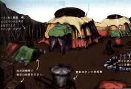

Disc 1
|
Day 1: Hanging Boxes and Mine Carts Supply the Dragon and I with Useful Items After the tragic events which involved the death of my friends, I was saved by a mysterious dragon. This dragon became my friend.We flew into the sky, headed toward the Excavation Site, hoping there would be any survivors. While we flew threw what was called "Above the Excavation Site," We came upon these odd hanging boxes. Believe it or not, there were actually hidden items in these hanging boxes. It only took the dragon multiple shots with his laser, and the many items from these boxes were ours. We also found various abandoned mine carts at Excavation Site # 4. I had the dragon destroy them right away, as they were just Imperial peices of crap. We gladly took the carts contents. |
Day 2: An Imperial Ships Last Transmissions While flying over "Canyon Deep Gulch," We found a destroyed Imperial ship, just barely supporting itself between the rock faces. As we drew closer, the dragon shot a laser at it, and a message played back. The crews last dying words, echoed into our ears. "...Do you have any idea what this means? Theres no reply from Lord Craymen's ship!...I cannot let that dragon fall into the wrong hands...All units, man your battle stations! Its too late. Missiles rapidly approaching...We can't evade!!" |
Day 3: The Caravan and An'jou's Pistols We finally reached a place full of civilization. We arrived at a traveling caravan. Upon entering the leader An'jou's tent, we observed his menacing pistols. Upon closer inspection the description, "Inscribed: From Mr. Woo.", could be read. |
|
 |
Day 4: The Garil Desert and the Secret Worm Lair Gash and I arrived at a place full of Ancient Ruins and ongoing sand dunes. Gash called it the "Garil Desert." We flew under numerous ancient Arches. Suddenly, a red worm erupted from the sand leading us to its secret lair, upon which we found 3 Shield Chips. The Exotic Kuo Plants During our travels in the Garil Desert, we noticed some very exotic multicolored plants, found in the Green Oasis and Blue Ruins. Gash told me they were called Kuo plants and they contained a special pollen. This pollen would make my dragon fly faster. I quickly had the dragon lock onto one of the white plants, and we had ourselves some Kuo Pollen. The dragon's speed did indeed improve, once he ate the exotic pollen (Note, while flying, holding B, press L, let go of L, then let go of B. You will now be able to fly without having to constantly hold down the B button!). |
 |